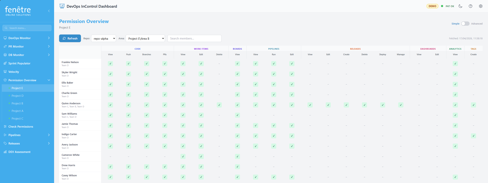

Permission Overview
The Permission Overview shows you who has access to what within an Azure DevOps project. It presents a clear permission matrix so you can quickly check whether team members have the right permissions.

The permission matrix in Simple mode.
How to Use It
- Navigate to a project via the sidebar and click Permission Overview.
- The screen loads the permission matrix for that project.
- Each row is a team member and each column is a permission category.
- Coloured cells indicate whether the person has that permission.
Simple vs Advanced Mode
Toggle between the two views using the switch at the top of the page:
| Mode | What It Shows |
|---|---|
| Simple | A flat table of people × permissions. Great for a quick overview. |
| Advanced | A tree view organised by teams, with expandable sections for repos, areas, and pipeline permissions. |
Filtering
- Repository dropdown — Filter permissions relevant to a specific repository.
- Area dropdown — Filter permissions relevant to a specific area path.
- Search members — Type a name to find a specific person.
Refreshing Data
Permission data is cached for a few minutes. Click Refresh to force a fresh scan from Azure DevOps.
Note
This screen requires your PAT to have sufficient permissions to read security data. If some columns are empty, your PAT may not have the required scope.
Tip
For a broader audit across multiple projects, use the Permission Audit screen instead.